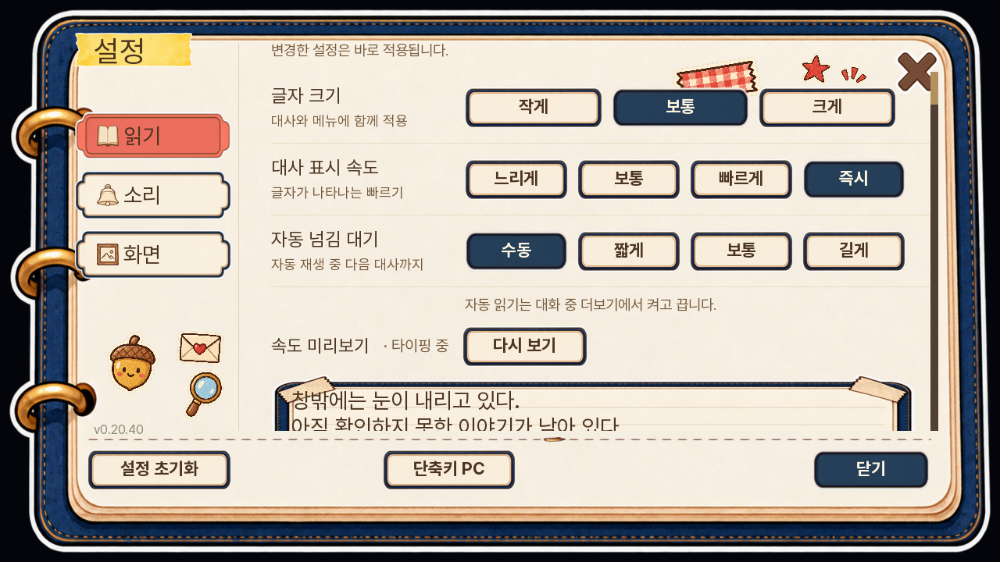
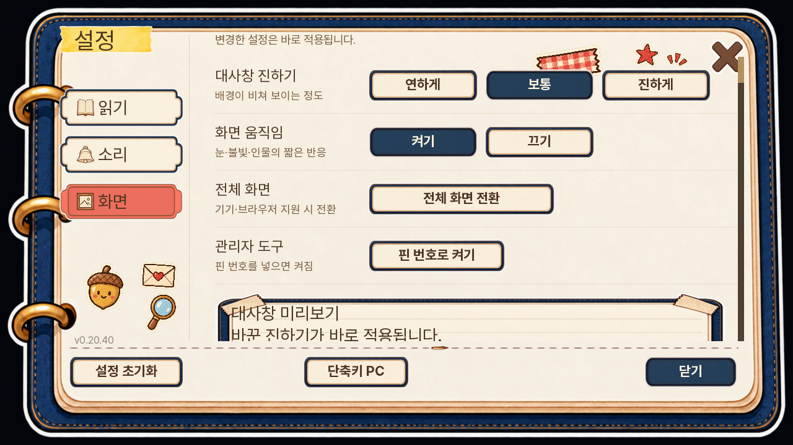
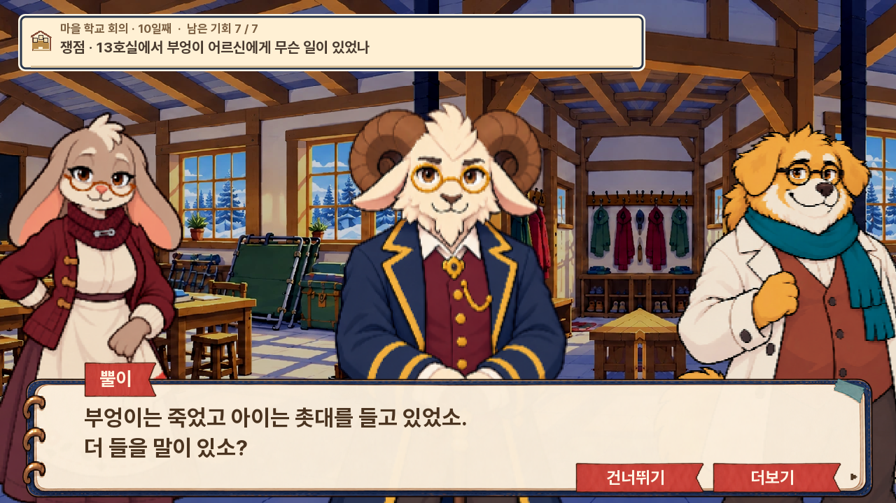
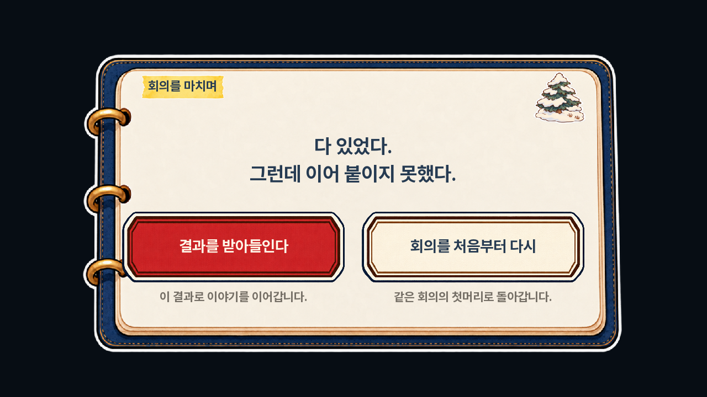

<meta charset="utf-8"><style>body{margin:0;background:#eee8dc;color:#29364b;font-family:sans-serif}main{display:grid;grid-template-columns:1fr 1fr;gap:8px;padding:8px}article{background:white}h3{font-size:20px;margin:0;padding:10px 14px}img{display:block;width:100%}a{color:inherit;text-decoration:none}header{font-size:24px;font-weight:bold;padding:16px}</style><header>다람탐정 · 전체 UI (이미지를 누르면 원본)</header><main><article><h3>옵션 · 소리</h3><a href="02-settings.png"></a></article><article><h3>옵션 · 읽기</h3><a href="15-settings-reading.png"></a></article><article><h3>옵션 · 화면</h3><a href="16-settings-display.png"></a></article><article><h3>회의 · 대사</h3><a href="17-meeting-dialogue.png"></a></article><article><h3>회의 · 자료 대조</h3><a href="13-meeting.png"></a></article><article><h3>회의 재시도 · 화면 단독 표시</h3><a href="12-meeting-retry.png"></a></article><article><h3>기록 / 자료</h3><a href="10-records.png"></a></article></main><main><article><h3>대사</h3><a href="04-dialogue.png"></a></article><article><h3>질문 · 검토용 항목</h3><a href="05-questions.png"></a></article><article><h3>선택 · 검토용 항목</h3><a href="06-choice.png"></a></article><article><h3>메인</h3><a href="01-main.png"></a></article></main><main><article><h3>조사 · 여관</h3><a href="03-field.png"></a></article><article><h3>마을 지도</h3><a href="09-map-village.png"></a></article><article><h3>여관 지도</h3><a href="07-map-inn.png"></a></article><article><h3>숲·산길 지도</h3><a href="08-map-forest.png"></a></article><article><h3>갈림길 · 검토용 진행 상태</h3><a href="11-forks.png"></a></article><article><h3>회의 · 터치 UI</h3><a href="14-meeting-touch.png"></a></article></main>